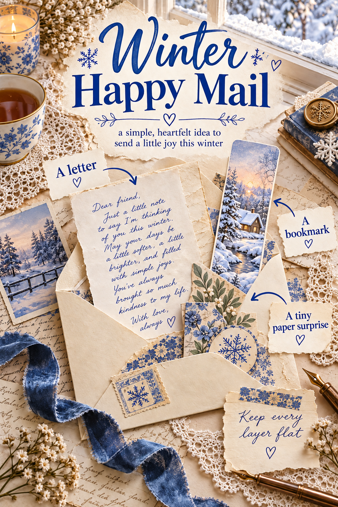
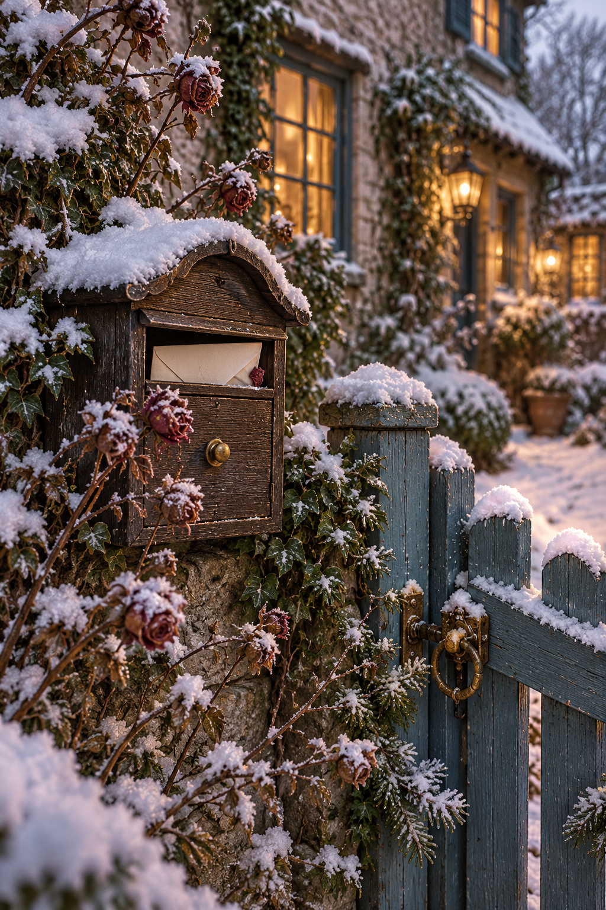

Winter happy mail can be a small piece of ordinary life sent across the distance. A letter, a useful paper extra, and one question are enough. You do not need a box of treats or a perfectly photographed parcel. The aim is to help a friend picture where you are and feel that you made room for them there.
Choose the envelope before making the contents
Start with an envelope you already own and a plain sheet that folds inside it without forcing the seams. This gives you a natural limit. Keep decorations flat and avoid anything loose, damp, fragile, or likely to rub colour onto the letter. A paper-only exchange is a friendly starting point when you want the project to stay manageable.
If you are sending abroad, check the postal service’s current rules for the finished envelope and its contents before you address it. Size, weight, thickness, and permitted enclosures vary. Let those practical details guide your choices rather than making a bulky parcel and trying to solve the posting afterwards.
Give your friend a window into your week
Begin with a scene they could almost join: “I’m writing by the kitchen window while the neighbour’s lights come on.” Add a small update and a detail you would mention if you were walking together. The new soup you keep making or a funny conversation on the bus can feel more companionable than a polished list of achievements.

Choose one question that is easy to answer. “What have you been cooking lately?” offers a place to begin. “Tell me everything about your life” can feel like homework. If your friend has little energy, add “No hurry to reply.” Mean it, and avoid filling the envelope with things that demand immediate action.
Include one paper extra with a reason
A handmade bookmark works well for a friend who reads. Cut plain card to fit a book comfortably, add a small decorative strip, and leave the back for a sentence such as “For the evenings we would spend reading in the same room.” Keep any layers thin and let the adhesive dry completely before enclosing it.
For someone who does not read much, use a tiny folded note containing a recipe you actually make, a favourite winter song title, or a remembered joke. Write the words yourself. Your extra should grow from something you share, rather than filling space because happy mail is supposed to contain many objects.
Give the papers one visual connection
Pick one winter colour and repeat it sparingly: a blue heading on the letter, a blue detail on the bookmark, a narrow paper band around the folded sheet. Plain writing paper keeps the message readable. If you use a decorative image, give it its own small area so it does not compete with the handwriting.

A paper band can hold the letter and extra together without adding string or a bow. Wrap a scrap strip loosely around the folded contents, overlap the ends, and glue the overlap to itself. Slide it off once to check that nothing underneath has stuck. Leave enough room for your friend to remove it without tearing the letter.
Pack for a real journey
Read the letter once, add the date and your name, then check that the ink is dry. Put your return address where the postal service expects it and keep the delivery address clear. Slide the contents into the envelope and feel for stiff corners or a concentrated lump. Remove an unnecessary layer if the envelope strains.
Take it to be weighed or measured if you are unsure about postage. Then let the small letter do its work. It does not need to prove how much you miss your friend through the amount you send. A clear picture of your ordinary winter day can make them feel closer all by itself.